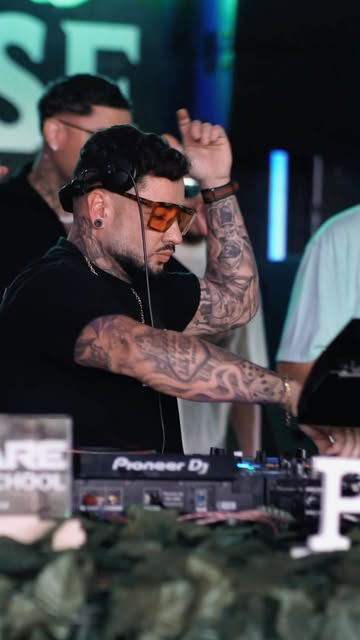

Set com duração.
House e groove para a casa inteira, não só para o momento do anúncio.
DJ · produtor · Curitiba
A noite de Curitiba com nome na pista e dono na produção. House, groove e festas da Fire Music e da Nectar Beats, com passagem pelo Park.Art.

Na mesa da Pulse.
Registro
Fotos públicas em que Spiler aparece na cabine, no booth ou na arte da Fire Music. Use as setas para ver mais; depois de ampliar, as setas seguem na galeria.
Cristian Spieler assina como SPILER no Instagram @spiler.music. A bio pública o apresenta como DJ, producer e produtor de evento, CEO da Fire Music e da Nectar Beats, com Rolê e Sonora Eventos na mesma assinatura.
O logo usa SPILER, com um L, igual aos destaques do perfil. DJ Spiller entra no título porque é o nome pelo qual a pista procura. Os dois convivem: um é a marca, o outro é a busca.
House e groove para a casa inteira, não só para o momento do anúncio.
Fire Music e Nectar Beats saem do mesmo artista que está no booth.
Park.Art em Pinhais, estúdio na região e a noite do centro na conversa.
Sets no SoundCloud e no YouTube, prontos para a casa ouvir antes de fechar.
Set no SoundCloud, creditado a Park.Art.
Estúdio Mixar · Park.Art. Set no SoundCloud.
Registro em vídeo. Há também versão em áudio no Linktree.
Vídeo publicado no Linktree. O título não informa o ano.
Série de sets. O link direto fica no Linktree.
Edição anterior da mesma série, também no Linktree.
Set publicado com esse título. T.I.M.E. é festa do Danghai Club.
Festas e grades publicadas pela produção ou pela casa. O catálogo de sets fica na seção Sets; aqui entram anúncios e datas confirmadas.
Anúncio no Instagram da Fire Music para o Park.Art SuperClub, com Spiler na grade. O material é de agosto de 2026.
Quando a produção confirmar uma nova data, o anúncio entra aqui com arte ou post oficial.
Avenida Iraí, 1700, Weissópolis, Pinhais. Palco dos registros Park.Art e do anúncio de 10 anos da Fire Music.
Rua Ruth Reckelberg Lickfeld, 881, Piraquara. Nome que acompanha os sets de Fire Music e Secret Groove no Linktree.
Rua Comendador Araújo, 609, Curitiba. Casa da festa T.I.M.E., nome do set de fevereiro de 2024.
Projeto em que Spieler assina como CEO. Dez anos anunciados no Park.Art.
Segunda casa de produção citada na bio, também sob o mesmo CEO.
A assinatura do perfil fecha com essas duas marcas de Curitiba. O Rolê de agosto de 2024 tem vídeo no Park.Art.
Este é o acordo de marca para quem publica, diagrama flyer ou responde uma casa. O site já pratica o acordo: um nome, um briefing e sets com prova.
SPILER é o DJ de Curitiba que também produz a festa.
Promessa: set com leitura e um parceiro que entende porta, arte e horário.
Promessa: house e groove, recap no dia seguinte e o nome da casa no crédito.
Fire Music e Nectar Beats mostram operação, não só o momento do drop.
| Semana | Peça | Canal | Função |
|---|---|---|---|
| 1 | Recap do último set | Reels e stories | Provar a pista |
| 2 | Bastidor de produção | Feed da Fire, Nectar, Rolê ou Sonora | Mostrar quem opera a festa |
| 3 | Set ou trecho novo | SoundCloud e card | Deixar a casa ouvir antes de fechar |
| 4 | Data e endereço | Post com a casa | Converter follow em presença |
O limite é simples: o número publicado precisa existir na pista, no estúdio ou na arte da casa.
DJ Spiller (SPILER) é DJ, produtor musical e produtor de eventos em Curitiba. CEO da Fire Music e da Nectar Beats, com sets no Park.Art e no Estúdio Mixar.
Cristian Spieler, conhecido como DJ Spiller e SPILER (@spiler.music), trabalha a noite de Curitiba dos dois lados do booth. Na pista, leva house e groove. Na produção, está à frente da Fire Music e da Nectar Beats, com Rolê e Sonora Eventos na assinatura pública. Os sets publicados incluem a série Spiler in the House, registros de Park.Art e Estúdio Mixar, e o título Time Danghai. Contratação e press kit passam pelo briefing deste site ou pela DM do Instagram.
Para fechar a data: booth com players e mixer de club, monitor de retorno, horário de passagem, duração do set, nome SPILER na arte e tag @spiler.music. Foto, logo e rider técnico completos seguem no press kit oficial, enviado sob pedido.
Curitiba e a região. Os registros públicos passam pelo Park.Art, em Pinhais, pelo Estúdio Mixar, em Piraquara, e por um set titulado Time Danghai.
No briefing, escolha “Press kit”. As bios saem na hora. Foto, logo e rider vêm do material que o artista já usa.
House e groove. Na arte, cabe também “produtor de eventos” quando a peça falar da Fire Music ou da Nectar Beats.
O canal público é o Instagram. O formulário organiza nome, casa, data e pedido, copia o texto e abre a conversa sem perder o recado.